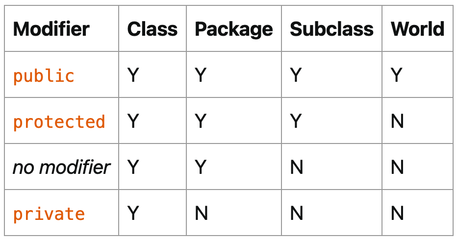

【官方】Java官方笔记4类和对象¶

创建类¶
定义类Bicycle：
public class Bicycle {
// the Bicycle class has
// three fields
public int cadence;
public int gear;
public int speed;
// the Bicycle class has
// one constructor
public Bicycle(int startCadence, int startSpeed, int startGear) {
gear = startGear;
cadence = startCadence;
speed = startSpeed;
}
// the Bicycle class has
// four methods
public void setCadence(int newValue) {
cadence = newValue;
}
public void setGear(int newValue) {
gear = newValue;
}
public void applyBrake(int decrement) {
speed -= decrement;
}
public void speedUp(int increment) {
speed += increment;
}
}
创建子类MountainBike继承类Bicycle：
public class MountainBike extends Bicycle {
// the MountainBike subclass has
// one field
public int seatHeight;
// the MountainBike subclass has
// one constructor
public MountainBike(int startHeight, int startCadence,
int startSpeed, int startGear) {
super(startCadence, startSpeed, startGear);
seatHeight = startHeight;
}
// the MountainBike subclass has
// one method
public void setHeight(int newValue) {
seatHeight = newValue;
}
}
可以看出定义类的语法如下：
class MyClass {
// field, constructor, and
// method declarations
}
复杂点的：
class MyClass extends MySuperClass implements YourInterface {
// field, constructor, and
// method declarations
}
定义了类MyClass继承类MySuperClass，并实现接口YourInterface。类只能有一个父类，但是能实现多个接口。
定义方法¶
方法定义示例：
public double calculateAnswer(double wingSpan, int numberOfEngines,
double length, double grossTons) {
//do the calculation here
}
方法签名，方法名+参数类型，比如上面的方法签名是：
calculateAnswer(double, int, double, double)
1个类中可以有多个同名的，但是不同参数的方法，也就是方法重载：
public class DataArtist {
...
public void draw(String s) {
...
}
public void draw(int i) {
...
}
public void draw(double f) {
...
}
public void draw(int i, double f) {
...
}
}
但是方法重载应谨慎使用，它会降低代码可读性。
类构造器¶
类有个默认的无参数的构造器，也可以自定义：
public Bicycle(int startCadence, int startSpeed, int startGear) {
gear = startGear;
cadence = startCadence;
speed = startSpeed;
}
构造器跟类同名，没有return。类可以有多个不同参数列表的构造器。
调用¶
参数定义的叫做Parameters ，实际传入的叫做Arguments 。
基本数据类型
public double computePayment(
double loanAmt,
double rate,
double futureValue,
int numPeriods) {
double interest = rate / 100.0;
double partial1 = Math.pow((1 + interest),
- numPeriods);
double denominator = (1 - partial1) / interest;
double answer = (-loanAmt / denominator)
- ((futureValue * partial1) / denominator);
return answer;
}
类对象
public Polygon polygonFrom(Point[] corners) {
// method body goes here
}
可变参数
public Polygon polygonFrom(Point... corners) {
int numberOfSides = corners.length;
double squareOfSide1, lengthOfSide1;
squareOfSide1 = (corners[1].x - corners[0].x)
* (corners[1].x - corners[0].x)
+ (corners[1].y - corners[0].y)
* (corners[1].y - corners[0].y);
lengthOfSide1 = Math.sqrt(squareOfSide1);
// more method body code follows that creates and returns a
// polygon connecting the Points
}
使用...来表示可变参数。
方法中的基本数据类型，return后消失：
public class PassPrimitiveByValue {
public static void main(String[] args) {
int x = 3;
// invoke passMethod() with
// x as argument
passMethod(x);
// print x to see if its
// value has changed
System.out.println("After invoking passMethod, x = " + x);
}
// change parameter in passMethod()
public static void passMethod(int p) {
p = 10;
}
}
方法中的引用类型，return后还有作用到原来的对象：
public class RefType {
public void moveCircle(Circle circle, int deltaX, int deltaY) {
// code to move origin of circle to x+deltaX, y+deltaY
circle.setX(circle.getX() + deltaX);
circle.setY(circle.getY() + deltaY);
// code to assign a new reference to circle
circle = new Circle(0, 0);
}
public static void main(String[] args) {
Circle circle = new Circle(1, 1);
RefType refType = new RefType();
refType.moveCircle(circle, 2, 2);
System.out.println(circle.getX());
}
}
运行结果为3。moveCircle里面的circle，set方法调用会影响到引用的对象。虽然最后new了一个新对象，但是赋值给的是方法内部的这个circle，return后消失，外面的circle不受影响。可以这么理解，外面和里面的两个circle，引用的都是同一个对象。
对象¶
创建对象：
Point originOne = new Point(23, 94);
Rectangle rectOne = new Rectangle(originOne, 100, 200);
Rectangle rectTwo = new Rectangle(50, 100);
变量声明：
type name;
如果是基本数据类型，则会先分配内存空间。如果是类引用，则不会，在new的时候才会分配内存空间。
字段：
objectReference.fieldName
方法：
objectReference.methodName(argumentList);
请记住，一个对象能有多个引用。
类的高级用法¶
方法退出有3种情况：
代码执行完
throw异常
return
返回类型如果是类，那么可以return子类。返回类型如果是接口，那么可以return接口实现类。
this关键字表示当前类，或用来调用其他构造方法：
public class Rectangle {
private int x, y;
private int width, height;
public Rectangle() {
this(0, 0, 1, 1);
}
public Rectangle(int width, int height) {
this(0, 0, width, height);
}
public Rectangle(int x, int y, int width, int height) {
this.x = x;
this.y = y;
this.width = width;
this.height = height;
}
...
}
调用其他构造方法必须放在第一行。
范围控制
top级别：public、package-private
member级别：public、private、protected、package-private
其中注意protected，等于package-private + 其他包中的子类（继承了当前类，但是在其他包里面）
怎么理解？在自己的地盘（package）随便玩，但是到了其他地盘，必须有父类保护（protected）

第3列的Subclass指的是其他包的子类。
访问控制有2个用途：
在用别人的类时，看哪些可以使用
定义自己的类时，决定哪些允许别人用
static关键字，创建类字段：
public class Bicycle {
private int cadence;
private int gear;
private int speed;
private int id;
private static int numberOfBicycles = 0;
public Bicycle(int startCadence, int startSpeed, int startGear){
gear = startGear;
cadence = startCadence;
speed = startSpeed;
// increment number of Bicycles
// and assign ID number
id = ++numberOfBicycles;
}
// new method to return the ID instance variable
public int getID() {
return id;
}
...
}
可以直接用类名访问：
Bicycle.numberOfBicycles
static关键字
创建类方法：
public static int getNumberOfBicycles() {
return numberOfBicycles;
}
创建常量：
static final double PI = 3.141592653589793;
注意，基本数据类型或string的常量，会在编译的时候直接替换。如果依赖外部包的常量值变化了，比如PI变成了3.9，那么当前代码需要重新编译。
关于static，有一个很重要的点是：static只能访问static，也就是class级别只能访问class级别，如果想访问member级别，必须实例化对象后通过引用来访问。
static块
对于字段初始化来说，如果想写多行代码来初始化（比如写个for循环来填充复杂数组），instance级别可以在构造函数来做，而对于class级别呢？就可以使用static块：
public class MyClass {
public static int x;
public static int y;
static {
x = 10;
y = 20;
System.out.println("静态块执行");
}
public static void main(String[] args) {
System.out.println("x=" + x);
System.out.println("y=" + y);
}
}
static块是用来给class级别字段做值初始化的，它们会按照在类中出现的顺序依次执行，并且它们在构造函数之前执行。
也可以定义static方法后赋值：
class Whatever {
public static varType myVar = initializeClassVariable();
private static varType initializeClassVariable() {
// initialization code goes here
}
}
member级别字段初始化块，也就是不带static的：
{
// whatever code is needed for initialization goes here
}
会在每个constructor中执行。也可以使用final方法：
class Whatever {
private varType myVar = initializeInstanceVariable();
protected final varType initializeInstanceVariable() {
// initialization code goes here
}
}
为什么这里必须要用final？因为在实例初始化期间调用非final方法会报错，这是为了提高代码健壮性、可读性和可维护性，初始化本来就是一个确定的事情，那么就用final限定清楚。
嵌套类¶
class OuterClass {
...
class InnerClass {
...
}
static class StaticNestedClass {
...
}
}
InnerClass能访问OutClass所有成员（可以理解为跟method类似），StaticNestedClass则不能。
什么情况需要用嵌套类？
这个类只会被另外1个类使用，那么可以定义为嵌套类（helper classes），优化包结构
封装，嵌套类可以访问内部private成员
可读性，小的嵌套类，方便阅读
必须先实例化OuterClass再实例化InnerClass：
OuterClass outerObject = new OuterClass();
OuterClass.InnerClass innerObject = outerObject.new InnerClass();
而static嵌套类跟普通类一样：
StaticNestedClass staticNestedObject = new StaticNestedClass();
注意，static嵌套类，跟其他顶层类是一样的，意味着它不能直接访问所在类的字段，而必须通过实例化对象引用才能访问。（也许是为了方便在一个文件里面写多个类，才设计了static嵌套类）
以下是示例：
OuterClass.java
public class OuterClass {
String outerField = "Outer field";
static String staticOuterField = "Static outer field";
class InnerClass {
void accessMembers() {
System.out.println(outerField);
System.out.println(staticOuterField);
}
}
static class StaticNestedClass {
void accessMembers(OuterClass outer) {
// Compiler error: Cannot make a static reference to the non-static
// field outerField
// System.out.println(outerField);
System.out.println(outer.outerField);
System.out.println(staticOuterField);
}
}
public static void main(String[] args) {
System.out.println("Inner class:");
System.out.println("------------");
OuterClass outerObject = new OuterClass();
OuterClass.InnerClass innerObject = outerObject.new InnerClass();
innerObject.accessMembers();
System.out.println("\nStatic nested class:");
System.out.println("--------------------");
StaticNestedClass staticNestedObject = new StaticNestedClass();
staticNestedObject.accessMembers(outerObject);
System.out.println("\nTop-level class:");
System.out.println("--------------------");
TopLevelClass topLevelObject = new TopLevelClass();
topLevelObject.accessMembers(outerObject);
}
}
TopLevelClass.java
public class TopLevelClass {
void accessMembers(OuterClass outer) {
// Compiler error: Cannot make a static reference to the non-static
// field OuterClass.outerField
// System.out.println(OuterClass.outerField);
System.out.println(outer.outerField);
System.out.println(OuterClass.staticOuterField);
}
}
一个变量引用的例子，这个例子展示了不同级别的同名变量，是如何取值的：
public class ShadowTest {
public int x = 0;
class FirstLevel {
public int x = 1;
void methodInFirstLevel(int x) {
System.out.println("x = " + x);
System.out.println("this.x = " + this.x);
System.out.println("ShadowTest.this.x = " + ShadowTest.this.x);
}
}
public static void main(String... args) {
ShadowTest st = new ShadowTest();
ShadowTest.FirstLevel fl = st.new FirstLevel();
fl.methodInFirstLevel(23);
}
}
x = 23
this.x = 1
ShadowTest.this.x = 0 // 注意这种在嵌套类取OuterClass同名字段的方式
Local Class，定义在method里面的嵌套类：
public class LocalClassExample {
static String regularExpression = "[^0-9]";
public static void validatePhoneNumber(
String phoneNumber1, String phoneNumber2) {
final int numberLength = 10;
// Valid in JDK 8 and later:
// int numberLength = 10;
class PhoneNumber {
String formattedPhoneNumber = null;
PhoneNumber(String phoneNumber){
// numberLength = 7;
String currentNumber = phoneNumber.replaceAll(
regularExpression, "");
if (currentNumber.length() == numberLength)
formattedPhoneNumber = currentNumber;
else
formattedPhoneNumber = null;
}
public String getNumber() {
return formattedPhoneNumber;
}
// Valid in JDK 8 and later:
// public void printOriginalNumbers() {
// System.out.println("Original numbers are " + phoneNumber1 +
// " and " + phoneNumber2);
// }
}
PhoneNumber myNumber1 = new PhoneNumber(phoneNumber1);
PhoneNumber myNumber2 = new PhoneNumber(phoneNumber2);
// Valid in JDK 8 and later:
// myNumber1.printOriginalNumbers();
if (myNumber1.getNumber() == null)
System.out.println("First number is invalid");
else
System.out.println("First number is " + myNumber1.getNumber());
if (myNumber2.getNumber() == null)
System.out.println("Second number is invalid");
else
System.out.println("Second number is " + myNumber2.getNumber());
}
public static void main(String... args) {
validatePhoneNumber("123-456-7890", "456-7890");
}
}
Local Class只能访问方法里面的final变量，或者“看似final”的变量（值不会发生变化）。否则会报错：local variables referenced from an inner class must be final or effectively final。但是能直接方法参数列表的parameters。
Anonymous Class，定义在method里面的没有名字的嵌套类：
public class HelloWorldAnonymousClasses {
interface HelloWorld {
public void greet();
public void greetSomeone(String someone);
}
public void sayHello() {
class EnglishGreeting implements HelloWorld {
String name = "world";
public void greet() {
greetSomeone("world");
}
public void greetSomeone(String someone) {
name = someone;
System.out.println("Hello " + name);
}
}
HelloWorld englishGreeting = new EnglishGreeting();
HelloWorld frenchGreeting = new HelloWorld() { // 匿名类
String name = "tout le monde";
public void greet() {
greetSomeone("tout le monde");
}
public void greetSomeone(String someone) {
name = someone;
System.out.println("Salut " + name);
}
};
HelloWorld spanishGreeting = new HelloWorld() { // 匿名类
String name = "mundo";
public void greet() {
greetSomeone("mundo");
}
public void greetSomeone(String someone) {
name = someone;
System.out.println("Hola, " + name);
}
};
englishGreeting.greet();
frenchGreeting.greetSomeone("Fred");
spanishGreeting.greet();
}
public static void main(String... args) {
HelloWorldAnonymousClasses myApp =
new HelloWorldAnonymousClasses();
myApp.sayHello();
}
}
它的语法跟constructor类似，new后面跟上implements接口或extends类的名字，但它是一个表达式，所以最后要加上分号。
请记住，Local Class和Anonymous Class，都是应以在method里面的。
参考资料：
Classes and Objects https://dev.java/learn/classes-objects/